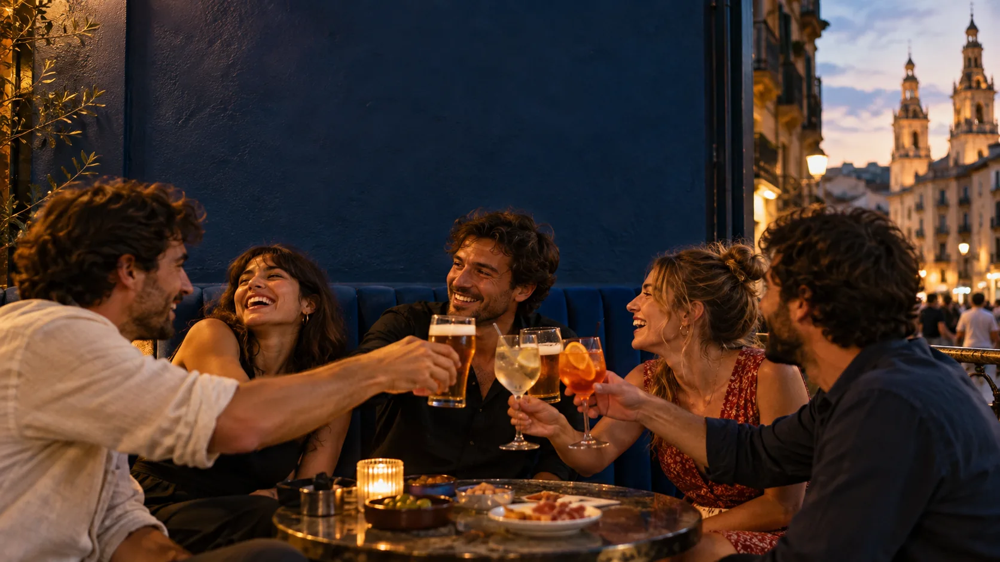

LOGROÑO · CALLE BARRIOCEPO 49 DESDE LA PRIMERA CAÑA
Parlamento.
01 / UN LUGAR, MUCHOS MOMENTOS
En la tierra del vino,
hay una barra que va a su ritmo.
Parlamento es café sin prisa, cerveza bien tirada, terraza con conversación y cócteles que hacen que subas a la primera planta. Un bar de toda la vida con un punto cañero y de rock&roll.
ENCUÉNTRANOS EN BARRIOCEPO ↗02 / ELIGE TU MOMENTO
Tres maneras de quedarse.
DE LA PLAZA A LA PRIMERA PLANTAEL RITMO LO PONES TÚ
CAFÉ.VERMÚ.PINTA.COPA.
Empieza como quieras. Aquí nadie mira el reloj cuando la conversación va bien.
UNA TRADICIÓN DE BARRIOLos jueves
Los jueves
se piden en pinta.
La Plaza del Parlamento se llena de gente, terrazas y jarras de cerveza a precio reducido. Hay semanas que empiezan el jueves.
EL DÍA DE LA PINTA ↗EL QUE VIENE, REPITE.
¿NOS VEMOS? ↗